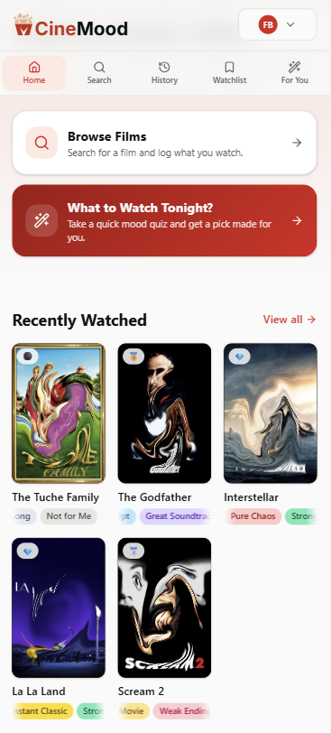
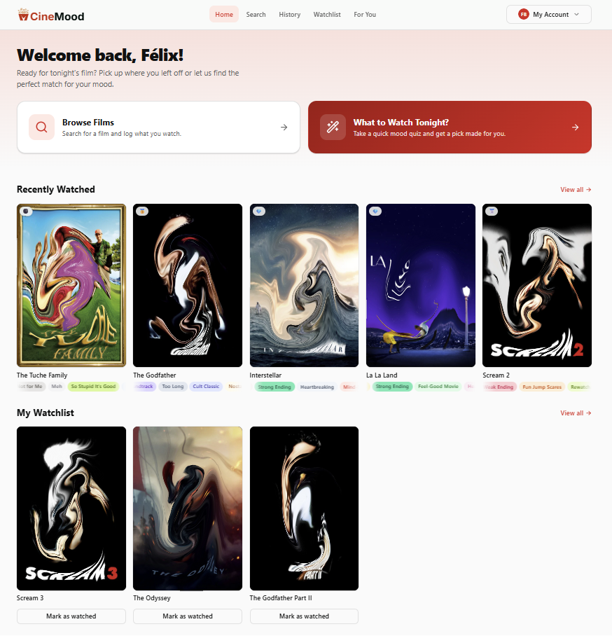
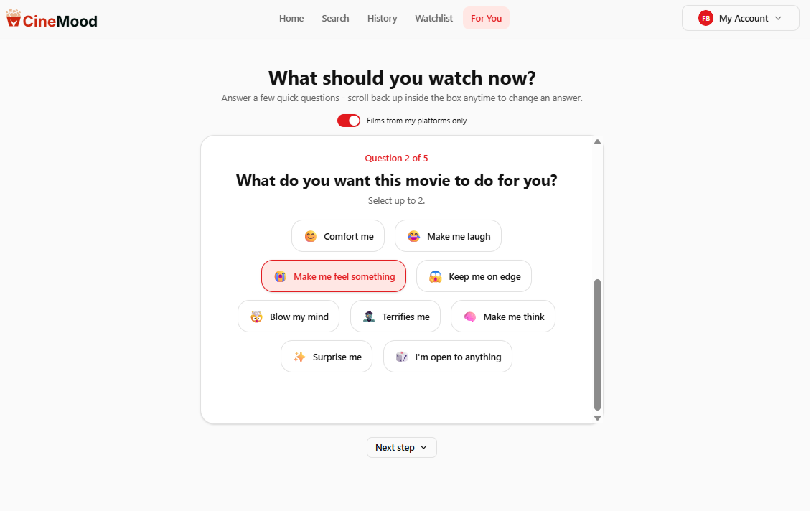
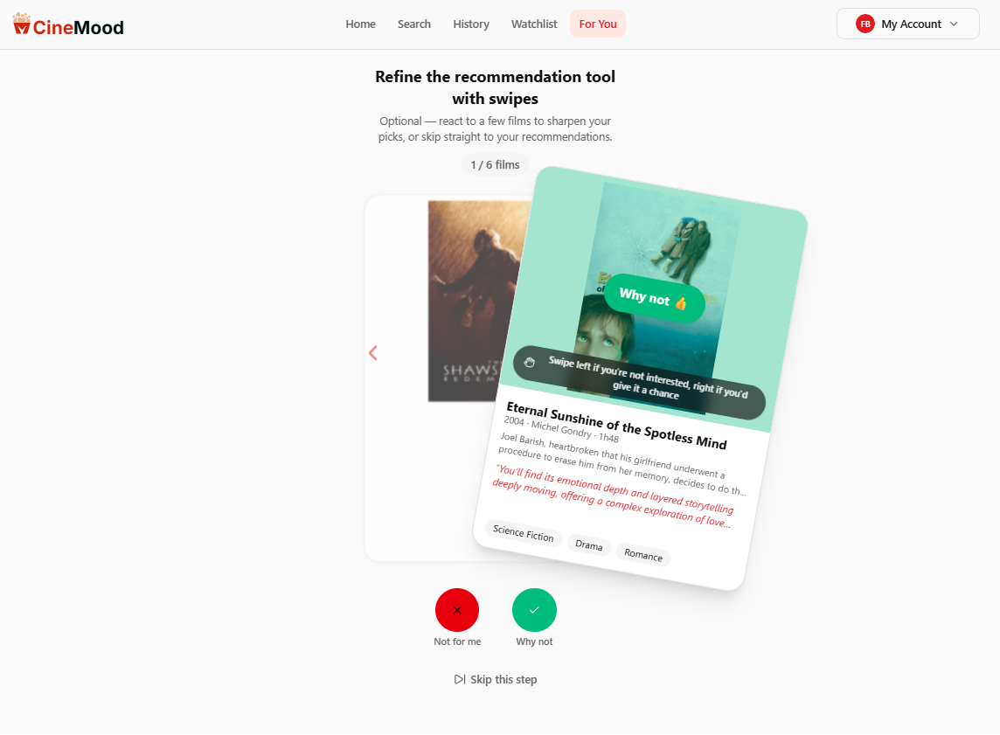
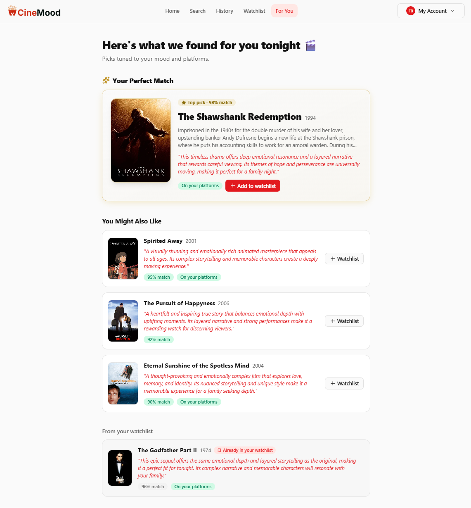

Mood-first film discovery
Stop scrolling. Tell CinéMood how you feel tonight - it recommends films you can actually watch on the platforms you already subscribe to.

CinéMood is a Single Page Application built with React and FastAPI. It combines a personal film library with an AI-powered recommendation engine - all filtered to the streaming platforms you actually subscribe to.
Search any film, build a watchlist, and log your viewing history with ratings and emotional tags.
Answer a quick mood questionnaire, swipe through candidates, and get personalized picks with a match score from Mistral AI.
Designed from the ground up for mobile. The full experience works on any screen size.

CinéMood is your personal film companion. Search any title, browse details, and build a library that's actually yours.
Search any film via the TMDB database. View synopsis, cast, director, and which of your streaming platforms have it tonight.
Save films you want to watch later. Your watchlist feeds directly into the AI recommendation engine.
Log every film with a six-tier Prestige rating - Platinum to Trash - and tag it with emotional markers like "Hidden Gem" or "Emotional Damage".
CinéMood uses Mistral AI to turn your current state of mind into a personalized shortlist - filtered to your platforms, informed by your history.

A short mood questionnaire captures how you feel tonight - energy level, what kind of experience you're after, and an optional free-text note. No typing required, just quick selections.

Mistral AI generates a deck of candidate films based on your profile. Swipe right to like, left to reject. Your preferences are gathered locally and sent in a single call at the end - no delay between swipes.

A second AI call processes your likes, dislikes, history, and watchlist together. Each result comes with a match score out of 100 and a personal explanation of why this film fits your mood tonight.
"What do I actually feel like watching tonight?"
I built CinéMood because I was tired of the same Friday evening ritual: open a streaming app, scroll for 45 minutes, give up. The problem wasn't the catalogue - it was that no tool asked the right question first.
The project started as a simple film logging app. Over six weeks and six sprints, it grew into a full AI-powered recommendation engine - with a PostgreSQL database, a FastAPI backend following a strict layered architecture, and a React frontend designed for mobile from the start.
Building it solo meant owning every decision - from data model design to prompt engineering, from JWT authentication to Vercel deployment. Every bug was mine to diagnose, every pattern mine to choose.
CinéMood is my end-of-year portfolio project at Holberton School Bordeaux, where I'm studying application design and development. The full codebase is open source on GitHub.
123 automated tests. 85% backend coverage. Live on Vercel.
Built in 6 sprints. Shipped solo.
Developer
Félix
Besançon